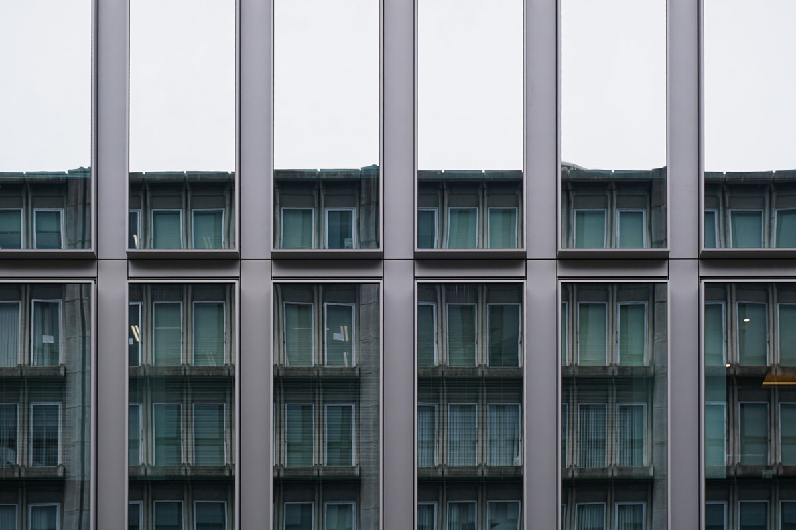
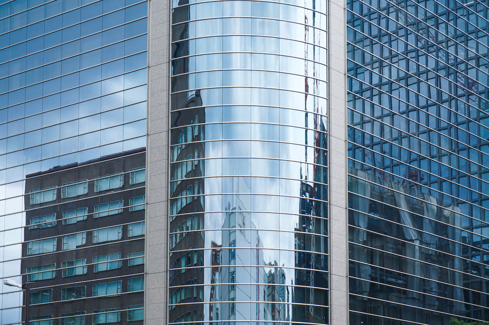
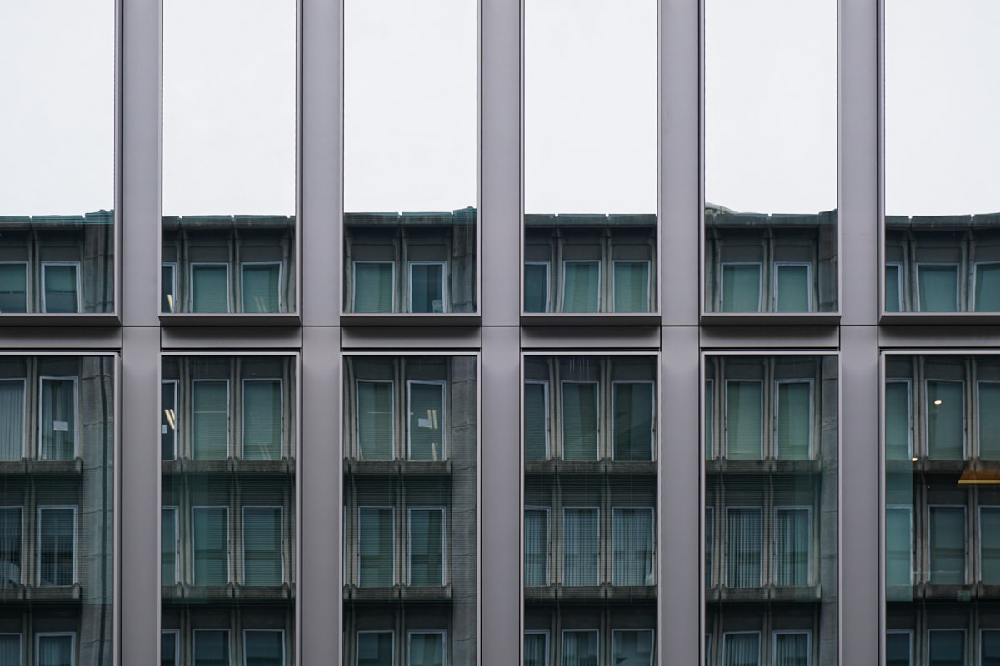
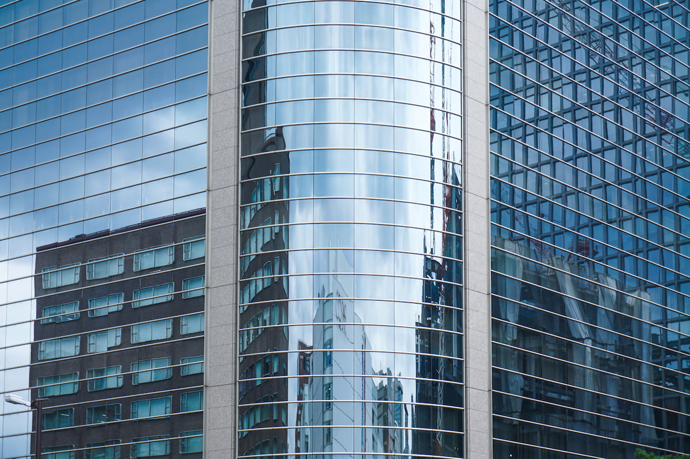

『Mutedscapes』
タイムラプスと写真を通じて、普段見逃されがちなビルに反射される景色の魅力について発信するプロジェクトです。
一般的に、ビルは無機質で冷たく、時間の変化がないように感じるといったと印象を持たれる方が多いと思います。しかし、ガラス張りのビルには、ここに加えて周囲の景色を反射するといった特徴が存在します。この特徴にフォーカスしたのが、『Mutedscapes』です。鏡のようなガラスに映り込む景色には、空の色や雲の形状の変化によって時間の移り変わりが反映され、表情豊かなビルの新たな一面を感じられます。
 



Photo
常に変化し続ける空や街並みを纏う窓ガラス。
もう二度と訪れない瞬間を写真で記録しました。
TimeLapse
人工物であるビルと自然物である空。
さらに留まり続けるビルと絶えず変化し続ける空。
2つの視点での対比をタイムラプスとして表現しました。